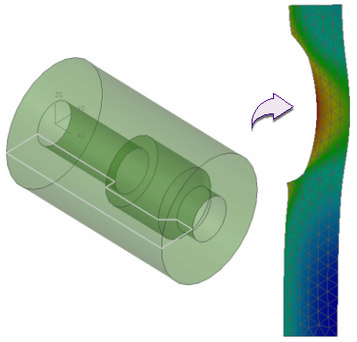

Axisymmetry occurs when a geometric part is a solid of revolution and the loads, constraints, and material properties are independent of the circumferential direction.
Advanced Simulation supports the following analyses:
Axisymmetric structural
Axisymmetric thermal
Axisymmetric thermal-structural
You can perform an axisymmetric analysis on solids of revolution by creating the FE model on a cross section on one side of the rotational axis.

Axisymmetric analysis lets you solve an FE model that is defined for only a section cut on one side of the axis of an axisymmetric part. This greatly reduces the degrees of freedom (DOF) and hence also significantly reduces solution time.